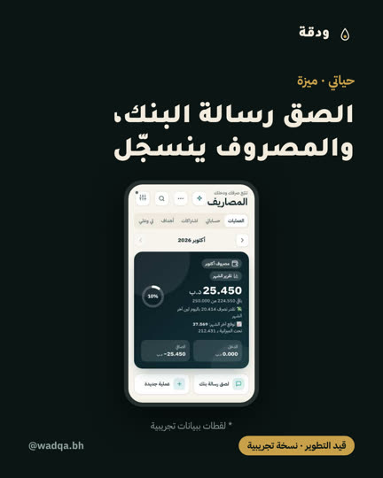
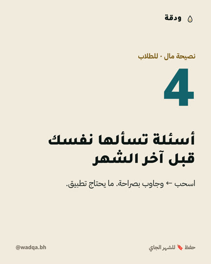
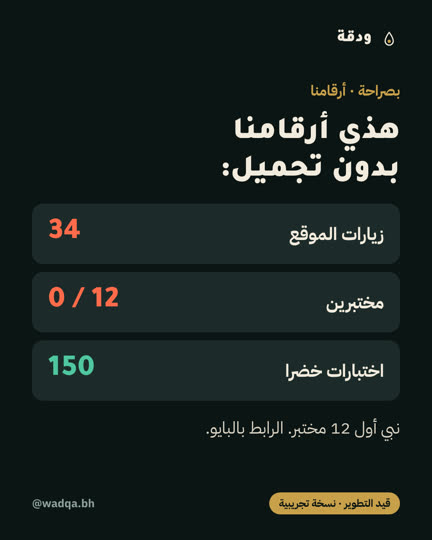
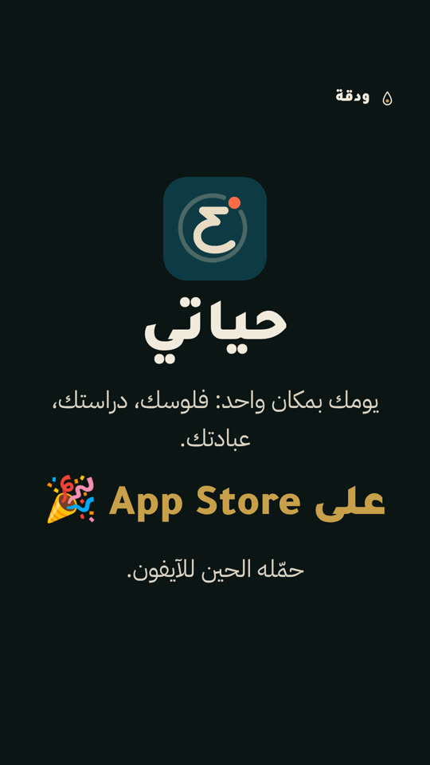
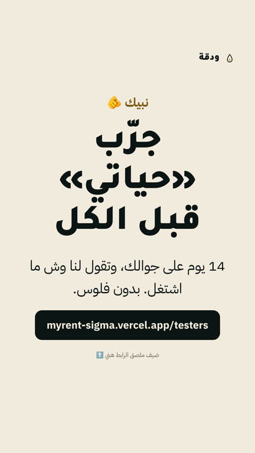
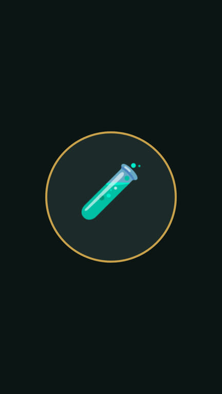
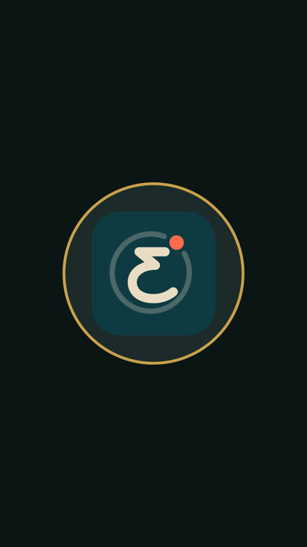
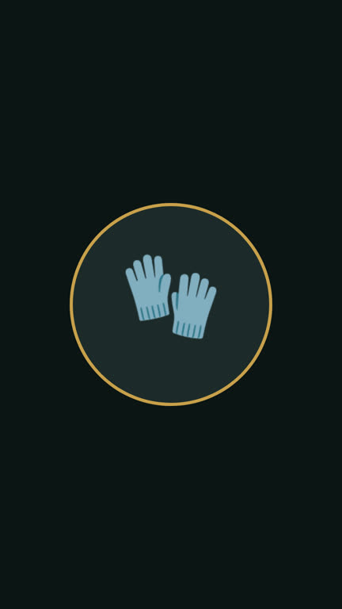

<title>إنستقرام ودقة</title>
<meta name="claude:viewport-fit-sides" content="cover">
<link rel="stylesheet" href="https://fonts.googleapis.com/css2?family=IBM+Plex+Sans+Arabic:wght@400;700&family=Tajawal:wght@900&display=swap">
<style>
/* Layout: one reading column — identity first (what it looks like), then the 8-week calendar as week bands */
:root { --bg:#F2EBDD; --surface:#FFFDF8; --fg:#0B1514; --muted:#5f655f; --line:#ddd3bf; --gold:#7A5A12; --accent:#13636B;
  --display:"Tajawal","Geeza Pro",sans-serif; --body:"IBM Plex Sans Arabic","Geeza Pro",Tahoma,sans-serif; }
@media (prefers-color-scheme: dark) { :root:not([data-theme="light"]) { --bg:#0B1514; --surface:#14211F; --fg:#F2EBDD; --muted:#9aa9a5; --line:#26332F; --gold:#C8A04A; --accent:#5FC2BB; color-scheme:dark } }
:root[data-theme="dark"] { --bg:#0B1514; --surface:#14211F; --fg:#F2EBDD; --muted:#9aa9a5; --line:#26332F; --gold:#C8A04A; --accent:#5FC2BB; color-scheme:dark }
body { background:var(--bg); color:var(--fg); font:16px/1.75 var(--body); margin:0; padding-left:max(16px,env(safe-area-inset-left,0px)); padding-right:max(16px,env(safe-area-inset-right,0px)); padding-block:32px 64px; }
main { max-width:980px; margin:0 auto; display:grid; gap:40px; }
h1 { font:900 clamp(32px,6vw,52px)/1.15 var(--display); margin:0; text-wrap:balance; }
h2 { font:900 26px/1.3 var(--display); margin:0 0 14px; }
.lead { color:var(--muted); margin:8px 0 0; max-width:62ch; }
.facts { display:flex; flex-wrap:wrap; gap:10px; margin-top:16px; }
.facts span { background:var(--surface); border:1px solid var(--line); border-radius:99px; padding:6px 14px; font-size:14px; }
.facts b { color:var(--gold); }
.grid { display:grid; grid-template-columns:repeat(auto-fill,minmax(160px,1fr)); gap:16px; }
figure { margin:0; display:grid; gap:6px; }
figure img { width:100%; border-radius:12px; border:1px solid var(--line); display:block; }
figcaption { font-size:13px; color:var(--muted); } figcaption b { color:var(--fg); display:block; font-size:14px; }
.hls { display:flex; flex-wrap:wrap; gap:18px; }
.hls figure { width:84px; text-align:center; } .hls img { aspect-ratio:1; object-fit:cover; border-radius:50%; }
.swatches { display:flex; flex-wrap:wrap; gap:10px; }
.sw { display:flex; align-items:center; gap:8px; font-size:13px; background:var(--surface); border:1px solid var(--line); border-radius:12px; padding:6px 10px; }
.sw i { width:22px; height:22px; border-radius:6px; border:1px solid var(--line); }
ul.rules { margin:0; padding-inline-start:20px; display:grid; gap:6px; }
.week { border-top:2px solid var(--line); padding-top:18px; }
.week header { display:flex; gap:12px; align-items:baseline; margin-bottom:12px; }
.week header b { font:900 22px var(--display); } .week header span { color:var(--gold); font-weight:700; }
.posts { display:grid; grid-template-columns:repeat(auto-fit,minmax(min(100%,280px),1fr)); gap:14px; }
.post { background:var(--surface); border:1px solid var(--line); border-radius:14px; padding:14px 16px; display:grid; gap:6px; align-content:start; min-width:0; }
.meta { display:flex; flex-wrap:wrap; gap:6px; align-items:center; font-size:13px; }
.day { font-weight:700; } .type { color:var(--muted); }
.tpl { font-size:12px; border:1px solid var(--line); border-radius:6px; padding:0 6px; color:var(--muted); }
.pill { font-size:12px; font-weight:700; border-radius:99px; padding:1px 10px; background:var(--line); }
.p-m { background:#13636B22; color:var(--accent); } .p-b { background:#C8A04A33; color:var(--gold); } .p-t { background:#FF6B4A26; color:#c44a2f; }
.post h4 { margin:2px 0 0; font:700 17px/1.5 var(--body); }
.post p { margin:0; color:var(--muted); font-size:14px; }
.cta { font-size:13px; font-weight:700; color:var(--accent); }
</style>
<main dir="rtl">
  <div><h1>إنستقرام ودقة: الهوية وخطة شهرين</h1>
    <p class="lead">حساب واحد للشركة يغطي حياتي وإداراتي. 24 منشور على 8 أسابيع، بإيقاع يلحقه طالب وحارس مرمى.</p>
    <div class="facts"><span>الحساب <b dir="ltr">@wadqa.bh</b></span><span>3 بالأسبوع: الأحد ريل · الثلاثاء كاروسيل · الخميس ستوري أو بوست</span><span>الهدف: <b>12 مختبر</b></span></div></div>

  <section><h2>الهوية</h2>
    <div class="swatches"><span class="sw"><i style="background:#0B1514"></i>حبر #0B1514</span><span class="sw"><i style="background:#F2EBDD"></i>عظم #F2EBDD</span><span class="sw"><i style="background:#C8A04A"></i>ذهبي #C8A04A</span><span class="sw"><i style="background:#13636B"></i>حياتي #13636B</span><span class="sw"><i style="background:#FF6B4A"></i>مرجاني #FF6B4A</span><span class="sw">Tajawal Black للعناوين · IBM Plex Sans Arabic للنص</span></div>
    <p class="lead">الشبكة تتناوب: داكن (ميزة، بصراحة) ← فاتح (نصيحة). كل منشور فيه الشعار فوق، و«قيد التطوير · نسخة تجريبية» تحت.</p></section>

  <section><h2>القوالب</h2><div class="grid"><figure><figcaption><b>T1 · ميزة</b>لقطة تجريبية + عنوان، داكن</figcaption></figure><figure><figcaption><b>T2 · نصيحة</b>رقم كبير + جملة، فاتح</figcaption></figure><figure><figcaption><b>T3 · بصراحة</b>أرقام حقيقية من تطبيق الشركة</figcaption></figure><figure><figcaption><b>S1 · قريباً 👀</b>ستوري تشويق، بدون تاريخ</figcaption></figure><figure><figcaption><b>S2 · كن مختبر</b>ستوري + ملصق الرابط</figcaption></figure></div></section>

  <section><h2>أغلفة الهايلايت</h2><div class="hls"><figure><figcaption><b>مختبرين</b></figcaption></figure><figure><figcaption><b>حياتي</b></figcaption></figure><figure><figcaption><b>إداراتي</b></figcaption></figure><figure><figcaption><b>كواليس</b></figcaption></figure><figure><figcaption><b>دعم</b></figcaption></figure></div></section>

  <section><h2>قواعد المحتوى</h2><ul class="rules"><li>لا تاريخ إطلاق ولا عد تنازلي. «قريباً 👀» بالستوري، و«قيد التطوير · نسخة تجريبية» بالبوستات والريلز.</li><li>أي لقطة من التطبيق: «* لقطات ببيانات تجريبية».</li><li>ما نعرض ميزة ما تشتغل اليوم (ملخصات المحاضرات بالذكاء الاصطناعي مطفية بالسيرفر، فما تنعرض).</li><li>ولا «حمّله الحين»: حياتي مو بالمتاجر للحين. الدعوة دايماً لـ «كن مختبر».</li><li>الأرقام بمنشورات «بصراحة» تنحدّث من تطبيق الشركة قبل النشر بنفس اليوم.</li></ul></section>

  <section><h2>الخطة: 8 أسابيع</h2><p class="lead">الأيام بدون تواريخ: تبدأ أول أحد بعد ما تسوي الحساب.</p></section>
  <section class="week"><header><b>الأسبوع 1</b><span>مين ودقة؟</span></header><div class="posts"><article class="post"><div class="meta"><span class="day">الأحد</span><span class="type">ريل 20ث</span><span class="pill p-k">كواليس</span></div>
<h4>طالب، حارس مرمى، وأبني تطبيقات بالعربي.</h4><p>أنا محمد. أدرس إدارة أعمال دولية، أحرس مرمى، وأبني «ودقة»: تطبيقات بحرينية بالعربي أول. هني بنوريكم كل شي وهو ينبني، بدون تجميل.<br>قيد التطوير · نسخة تجريبية</p><div class="cta">← تابعنا</div></article><article class="post"><div class="meta"><span class="day">الثلاثاء</span><span class="type">كاروسيل 5</span><span class="pill p-q">قيمة</span><span class="tpl">T2</span></div>
<h4>ليش تطبيق بالعربي أول؟</h4><p>أغلب التطبيقات تترجم للعربي بعدين. إحنا نبدأ منه: الأرقام، الاتجاه، والتواريخ الهجرية. اسحب ←</p><div class="cta">← احفظ</div></article><article class="post"><div class="meta"><span class="day">الخميس</span><span class="type">ريل 61ث</span><span class="pill p-b">بصراحة</span><span class="tpl">فيديو التطويرات</span></div>
<h4>يومين شغل على الشركة. هذا كل اللي تغيّر.</h4><p>فيديو التطويرات (جاهز، ضيف موسيقى من CapCut).<br>* لقطات ببيانات تجريبية · قيد التطوير</p><div class="cta">← الرابط بالبايو</div></article></div></section><section class="week"><header><b>الأسبوع 2</b><span>حياتي: الفلوس</span></header><div class="posts"><article class="post"><div class="meta"><span class="day">الأحد</span><span class="type">ريل 15ث</span><span class="pill p-m">ميزة</span><span class="tpl">T1</span></div>
<h4>الصق رسالة البنك، والمصروف ينسجّل.</h4><p>تلصق رسالة البنك، و«حياتي» يطلّع المبلغ والمحل والتصنيف. بدون ما تكتب شي.<br>* لقطات ببيانات تجريبية · قيد التطوير · نسخة تجريبية</p><div class="cta">← كن مختبر (الرابط بالبايو)</div></article><article class="post"><div class="meta"><span class="day">الثلاثاء</span><span class="type">كاروسيل 6</span><span class="pill p-q">قيمة</span><span class="tpl">T2</span></div>
<h4>4 أسئلة تسألها نفسك قبل آخر الشهر.</h4><p>1) كم صرفت على الأكل برا؟ 2) أي اشتراك ما استخدمته؟ 3) كم باقي لين الراتب؟ 4) وش بتأجله للشهر الجاي؟</p><div class="cta">← احفظ 🔖</div></article><article class="post"><div class="meta"><span class="day">الخميس</span><span class="type">ستوري ×3</span><span class="pill p-t">مختبرين</span><span class="tpl">S2</span></div>
<h4>نبي 12 شخص يجربون «حياتي» قبل الكل.</h4><p>ستوري 1: S2 + ملصق الرابط · ستوري 2: تصويت «أندرويد ولا آيفون؟» · ستوري 3: «قريباً 👀» (S1)</p><div class="cta">← ملصق الرابط</div></article></div></section><section class="week"><header><b>الأسبوع 3</b><span>حياتي: الدراسة</span></header><div class="posts"><article class="post"><div class="meta"><span class="day">الأحد</span><span class="type">ريل 20ث</span><span class="pill p-m">ميزة</span><span class="tpl">T1</span></div>
<h4>جدولك من البورتال لجوالك بنسخة ولصق.</h4><p>تنسخ جدولك من بوابة الجامعة وتلصقه، والمحاضرات تطلع بأيامها وأوقاتها.<br>* لقطات ببيانات تجريبية · قيد التطوير</p><div class="cta">← كن مختبر</div></article><article class="post"><div class="meta"><span class="day">الثلاثاء</span><span class="type">كاروسيل 6</span><span class="pill p-q">قيمة</span><span class="tpl">T2</span></div>
<h4>ميزانية طالب جامعة: مثال بالأرقام.</h4><p>مثال تقديري بالدينار: مواصلات، أكل، قهوة، اشتراكات، ادخار. عدّل الأرقام على وضعك.<br>(أرقام مثال، مو نصيحة مالية)</p><div class="cta">← احفظ</div></article><article class="post"><div class="meta"><span class="day">الخميس</span><span class="type">بوست</span><span class="pill p-b">بصراحة</span><span class="tpl">T3</span></div>
<h4>هذي أرقامنا بدون تجميل.</h4><p>زيارات الموقع، المختبرين، والاختبارات. نحدّثها كل أسبوعين عشان تشوفون وين وصلنا.</p><div class="cta">← الرابط بالبايو</div></article></div></section><section class="week"><header><b>الأسبوع 4</b><span>كواليس</span></header><div class="posts"><article class="post"><div class="meta"><span class="day">الأحد</span><span class="type">ريل 30ث</span><span class="pill p-k">كواليس</span></div>
<h4>تمرين حراسة الصبح، محاضرة الظهر، وكود بالليل.</h4><p>يوم كامل بـ 30 ثانية. ودقة تنبني بالوقت اللي يبقى.</p><div class="cta">← تابع</div></article><article class="post"><div class="meta"><span class="day">الثلاثاء</span><span class="type">كاروسيل 5</span><span class="pill p-m">ميزة</span><span class="tpl">T1</span></div>
<h4>«عبادتي»: الورد والمسبحة والتقويم الهجري.</h4><p>ورد القرآن، المسبحة، ومناسبات البحرين والخليج بالتقويم الهجري.<br>* لقطات ببيانات تجريبية · قيد التطوير</p><div class="cta">← كن مختبر</div></article><article class="post"><div class="meta"><span class="day">الخميس</span><span class="type">ستوري ×2</span><span class="pill p-i">تفاعل</span></div>
<h4>وش أكثر تطبيق تفتحه كل يوم؟</h4><p>ستوري سؤال مفتوح + ستوري نتائج</p><div class="cta">← سؤال</div></article></div></section><section class="week"><header><b>الأسبوع 5</b><span>إداراتي</span></header><div class="posts"><article class="post"><div class="meta"><span class="day">الأحد</span><span class="type">ريل 20ث</span><span class="pill p-m">ميزة</span><span class="tpl">T1</span></div>
<h4>إيجارات العائلة بمكان واحد، والكل يشوف نفس الأرقام.</h4><p>إداراتي: الوحدات، المستأجرين، الدفعات، والتذكير بالواتساب. تنجرّب على الويب الحين.<br>* لقطات ببيانات تجريبية · نسخة تجريبية · قيد التطوير</p><div class="cta">← الرابط بالبايو</div></article><article class="post"><div class="meta"><span class="day">الثلاثاء</span><span class="type">كاروسيل 6</span><span class="pill p-q">قيمة</span><span class="tpl">T2</span></div>
<h4>5 أخطاء بمتابعة الإيجارات.</h4><p>بدون إيصال، بدون تاريخ استحقاق، دفتر بإيد شخص واحد، تأخير بدون تذكير، وعقد بدون نسخة.<br>(مو استشارة قانونية)</p><div class="cta">← احفظ</div></article><article class="post"><div class="meta"><span class="day">الخميس</span><span class="type">بوست</span><span class="pill p-b">بصراحة</span><span class="tpl">T3</span></div>
<h4>قيّمنا شركتنا: 5.8 من 10.</h4><p>كل قسم بدرجته ومؤشره. الأقوى الهندسة والتصميم، والأضعف التسويق والمختبرين. الهدف 9.</p><div class="cta">← ساعدنا: كن مختبر</div></article></div></section><section class="week"><header><b>الأسبوع 6</b><span>حياتي: اليوم</span></header><div class="posts"><article class="post"><div class="meta"><span class="day">الأحد</span><span class="type">ريل 15ث</span><span class="pill p-m">ميزة</span><span class="tpl">T1</span></div>
<h4>يومك كله بشاشة وحدة.</h4><p>صرفت اليوم، باقي الميزانية، مهامك، وجدولك. بنظرة وحدة.<br>* لقطات ببيانات تجريبية · قيد التطوير</p><div class="cta">← كن مختبر</div></article><article class="post"><div class="meta"><span class="day">الثلاثاء</span><span class="type">كاروسيل 6</span><span class="pill p-q">قيمة</span><span class="tpl">T2</span></div>
<h4>أسبوع الامتحانات: خطة على جدولك.</h4><p>قسّم المواد على الأيام الفاضية، ساعتين بالجلسة، ويوم مراجعة قبل كل امتحان.</p><div class="cta">← احفظ</div></article><article class="post"><div class="meta"><span class="day">الخميس</span><span class="type">ستوري</span><span class="pill p-t">مختبرين</span><span class="tpl">S2</span></div>
<h4>وصلنا n من 12 مختبر.</h4><p>الرقم من تطبيق الشركة بنفس اليوم.</p><div class="cta">← ملصق الرابط</div></article></div></section><section class="week"><header><b>الأسبوع 7</b><span>الثقة</span></header><div class="posts"><article class="post"><div class="meta"><span class="day">الأحد</span><span class="type">ريل 30ث</span><span class="pill p-k">كواليس</span></div>
<h4>حارس مرمى يبني تطبيق: وش تعلمت من الملعب؟</h4><p>الحارس آخر خط. نفس الشي بالتطبيق: الاختبارات قبل ما يوصل لك أي شي.</p><div class="cta">← تابع</div></article><article class="post"><div class="meta"><span class="day">الثلاثاء</span><span class="type">كاروسيل 5</span><span class="pill p-q">قيمة</span><span class="tpl">T2</span></div>
<h4>وين تنحفظ بياناتك؟</h4><p>بجهازك أول. الحساب اختياري. وكل حساب يشوف بياناته بس. (حسب سياسة الخصوصية)</p><div class="cta">← الرابط بالبايو</div></article><article class="post"><div class="meta"><span class="day">الخميس</span><span class="type">بوست</span><span class="pill p-i">تفاعل</span><span class="tpl">T2</span></div>
<h4>اقترح ميزة، ونبنيها لو تنفع الكل.</h4><p>اكتب بالتعليقات أو من «اقترح ميزة» داخل التطبيق.</p><div class="cta">← علّق</div></article></div></section><section class="week"><header><b>الأسبوع 8</b><span>شهرين</span></header><div class="posts"><article class="post"><div class="meta"><span class="day">الأحد</span><span class="type">ريل 20ث</span><span class="pill p-m">ميزة</span></div>
<h4>من 6 تطبيقات لتطبيق واحد.</h4><p>البنك، الملاحظات، التقويم، المهام، المسبحة، والجدول. صاروا بمكان واحد.<br>* لقطات ببيانات تجريبية · قيد التطوير</p><div class="cta">← كن مختبر</div></article><article class="post"><div class="meta"><span class="day">الثلاثاء</span><span class="type">كاروسيل 6</span><span class="pill p-b">بصراحة</span><span class="tpl">T3</span></div>
<h4>شهرين: وش تعلمنا؟</h4><p>الأرقام الحقيقية من تطبيق الشركة، وش اشتغل، ووش ما اشتغل.</p><div class="cta">← احفظ</div></article><article class="post"><div class="meta"><span class="day">الخميس</span><span class="type">ستوري ×2</span><span class="pill p-t">مختبرين</span><span class="tpl">S1</span></div>
<h4>شكراً للمختبرين 🤍</h4><p>شكر + «قريباً 👀» للخطوة الجاية (بدون تاريخ)</p><div class="cta">← —</div></article></div></section>
</main>